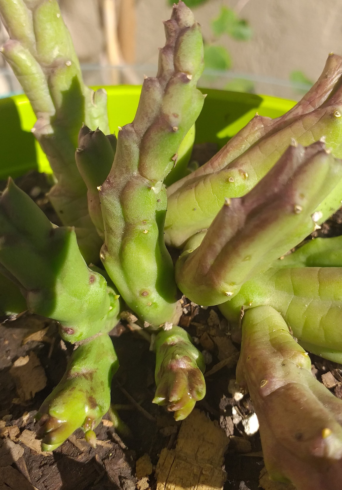

La familia está dividida en 366 géneros aceptados que incluyen unas 4500-5500 especies aceptadas.

orbea variegata
Es una pequeña planta de 25 cms de alto como máximo que crean grupos de tallos carnosos, con protuberancias semejantes a espinas y de sección cuadrangular. Crece activamente durante la temporada de lluvias de invierno.
Es originaria de Sudáfrica
Media sombra con algo de sol.
En verano moderado no tolera en absoluto los encharcamientos. En invierno dejar de regar.
Buen drenaje ya que sufre mucho de podredumbre en el cuello.
orbea variegata en flor
También conocida como Flor de lagarto, Flor de dragón o Estrella
Las flores son muy vistosas en esta especie, aunque poseen un olor desagradable para atraer a diferentes especies de moscas
La coloración de las flores es amarilla crema con numerosas manchas rojizas.
Media sombra con algo de sol.
En verano moderado no tolera en absoluto los encharcamientos. En invierno dejar de regar.
Buen drenaje ya que sufre mucho de podredumbre en el cuello.
stapelia grandiflora
Tiene tallos con ángulos afilados. Cada tallo puede llegar a medir 25 cm de alto.
Su flor parece una estrella de mar que puede llegar a medir hasta 7.5 cm de ancho de color amarillo verdoso con manchas púrpura o marrón oscuro.
Media sombra.
Moderado. En invierno suspender riego.
Buen drenaje y arenoso.
 Media sombra con algo de sol.
Media sombra con algo de sol.
 En verano moderado no tolera en absoluto los encharcamientos. En invierno dejar de regar.
En verano moderado no tolera en absoluto los encharcamientos. En invierno dejar de regar.
 Buen drenaje ya que sufre mucho de podredumbre en el cuello.
Buen drenaje ya que sufre mucho de podredumbre en el cuello.